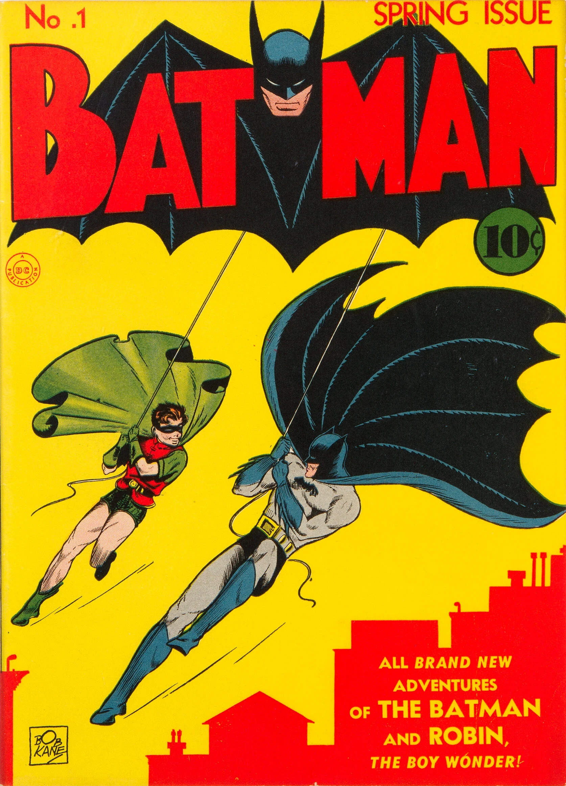
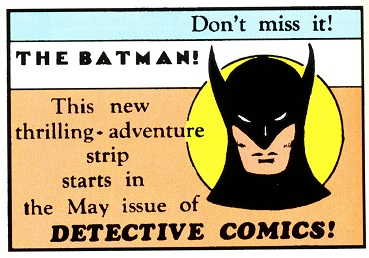
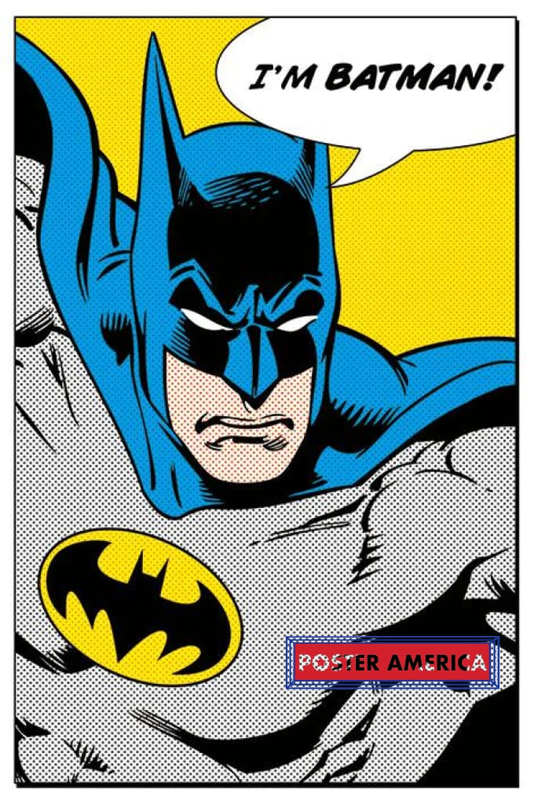
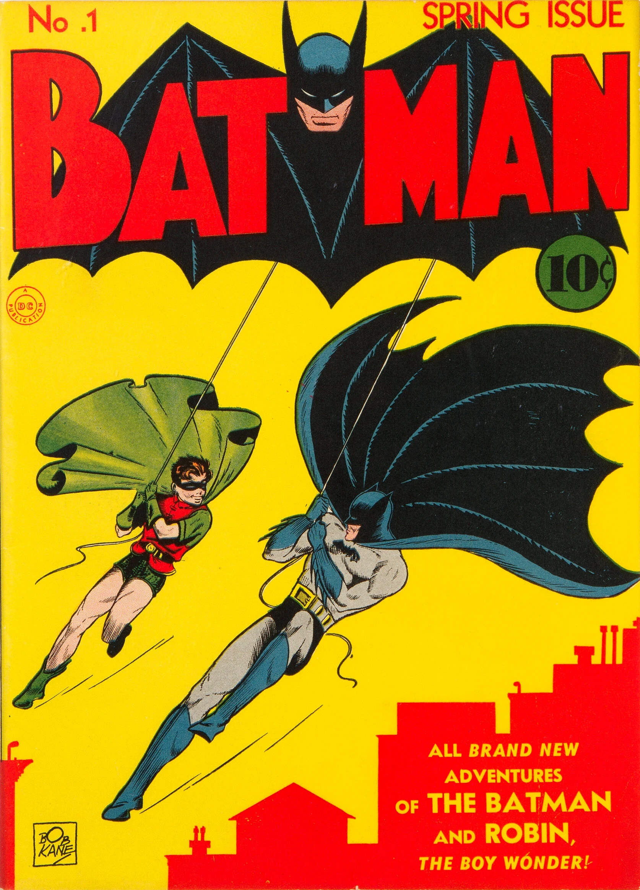
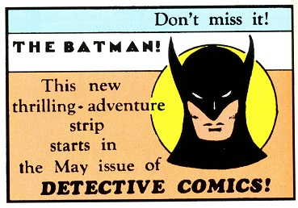
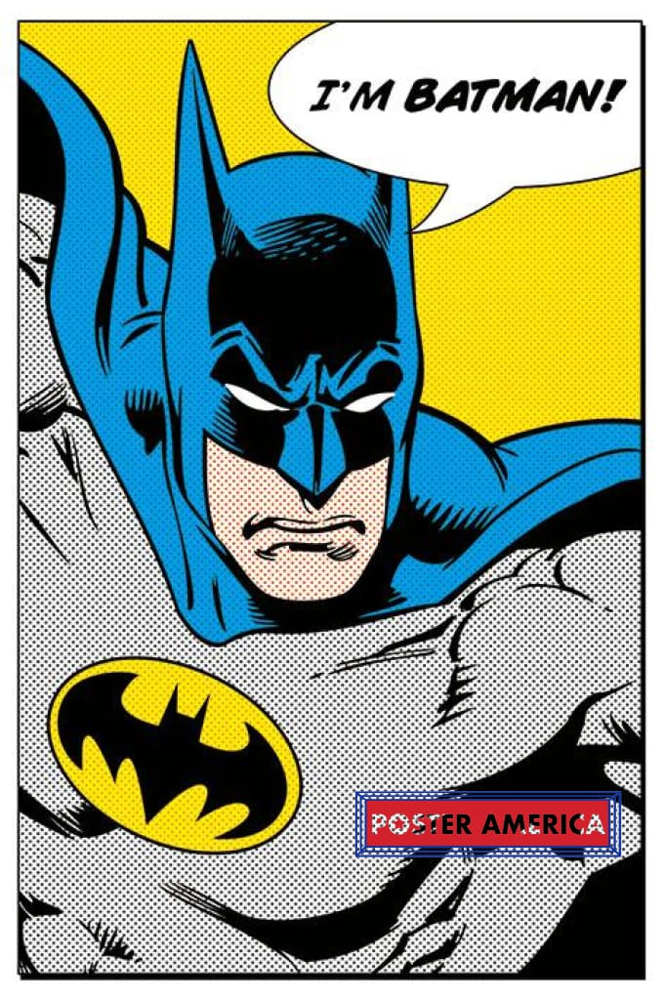

Esimesed koomiksid
Batman sai alguse justnimelt koomiksitest. Kõik algas aastal 1939, kui 30. märtsil ilmust artisti Bob Kane ja kirjaniku Bill Fingeri detektiivi koomiksi 27. osa, kus oli esimest korda Batmani tegelane. DC koomiksite maailmas on Batman ameeriklane Bruce Wayne, kes on rikkurist firmaomanik väljamõeldud Gothami linnas. Nähes lapsena pealt enda vanemate mõrva, püstitas Bruce enda eesmärgist võidelda kurjuse ja kriminaalide vastu. Batman loodi suuresti sellepärast, et eelmisel aastal loodud Supermani koomiksid osutusid vägagi edukaks. Erinevalt Supermanist ei ole Batmanil supervõimeid, vaid lihtsalt tugev füüsiline vorm ja mõistus ning nahkhiire kostüüm, et hirmutada kurjategijaid.
 


...



...
Koomiksid tänapäeval
Tänapäeval on Batmani koomiksid endiselt üks DC Comicsi nurgakivisid ning teda jätkuvalt esitletakse mitmesugustes seeriates ja miniseriaalides. Nii mainstream kui ka alternatiivsetes väljaannetes käsitletakse Batmani erinevate autorite ja kunstnike poolt, kes lisavad uusi kihte ja keerdkäike tema karakterile. Batmani kaudu on tulnud paljudki teised tuntud tegelased nagu Joker, Penguin jt pahalased kui ka tuntud kangelased nagu Catwoman, Robin, Batgirl jt. Mitmeid spin-off koomikseid on samuti tehtud nende karakterite põhjal. Batmani koomiksite mitmekesisus on suur, hõlmates kõike alates traditsioonilistest seiklustest kuni eksperimentaalsete ja dünaamiliste visuaalsete stiilideni. Lugejatele pakutakse pidevalt värsket perspektiivi ja looarendust, tagades, et Batmani maailm jääb dünaamiliseks ja kaasahaaravaks ka tänapäeva koomiksite maastikul.
Inspiratsioon koomiksitest
Batmani koomiksid on olnud mitmete ikooniliste filmide ja mängude allikaks. Tim Burtoni "Batman" (1989) ja Christopher Nolani "The Dark Knight" triloogia (2005-2012) tõid pimeduse rüütli suurele ekraanile, kujutades Gothami maailma tumedama atmosfääriga ja keerulisemate karakteritega. Mängudes, nagu "Batman: Arkham Asylum" (2009), süvendatakse lugu ning pakutakse mängijatele võimalust kogeda Gotham City ohtusid ja Batmani ülivõimeid ning tema kuulsaid detektiivi oskuseid.